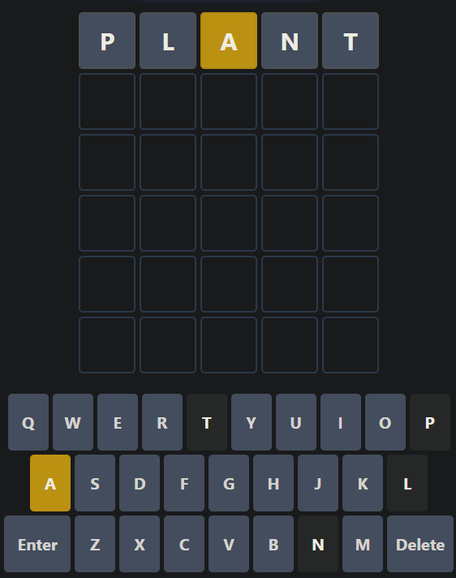
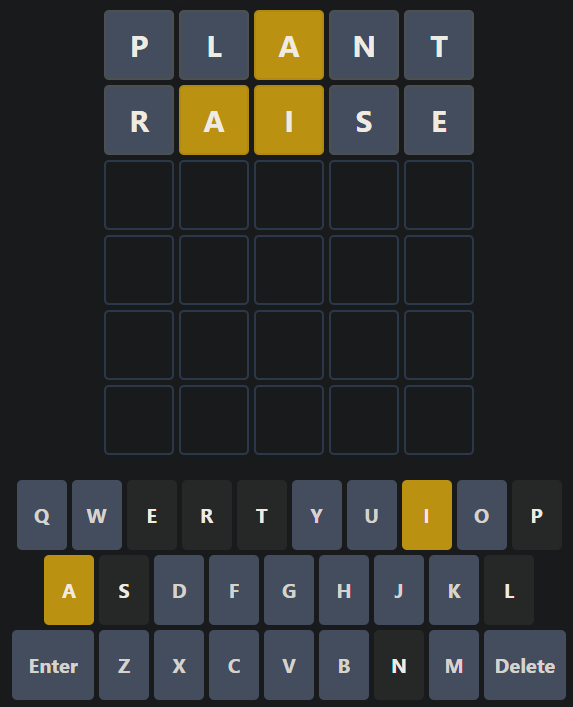
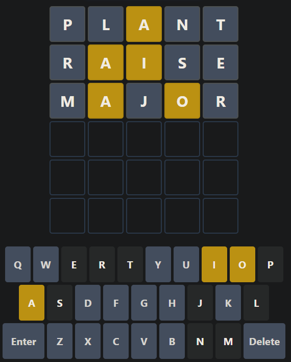
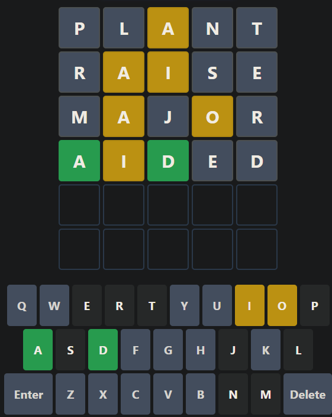
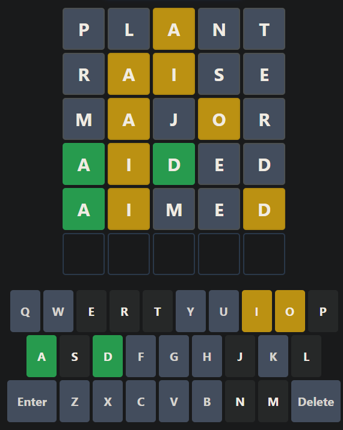

Andrew's Blog
Andrew's Blog


Andrew Nolan
2023-09-25
Earlier today (September 25th, 2023) OpenAI made a blog post titled "ChatGPT can now see, hear, and speak."
Starting today, ChatGPT can listen to you and analyze photos you share with it. Bringing computer vision into ChatGPT is a big step from its previous text-only conversations. The announcement blog proclaims GPT will now be able to help "troubleshoot why your grill won't start, explore the contents of your fridge to plan a meal, or analyze a complex graph for work-related data." Those are some very impressive claims!
Earlier this year, during the first wave of generative AI excitement, I wrote a blog about Playing Wordle with ChatGPT with the goal of reminding people that these tools are very cool, but definitely have some limitations and are not the magic thinking machines some AI fanatics proselytize.
With vision and audio, conversations with ChatGPT will be more interactive and easier than before. That makes it a good time to remind everyone that these tools do still have limitations. And if you are ever afraid of AI taking over, try playing a game with it, you might not be as scared.
Today, we are going to play Wordle with ChatGPT again. I am lucky enough to be one of the early accessors of the new vision feature. With Vision ChatGPT can play and make decisions based on the visuals of the game. The same way a human player would see on the New York Times' site.
For each step, I will share an image with ChatGPT and ask it to provide the next guess and its interpretation of the resulting image. This way we can see what it's thinking.
The secret word will be AUDIO.
Without further ado, let's play Wordle with ChatGPT...
Me:
Let's play Wordle! You have 6 guesses to figure out the word I am thinking of. After each guess I will reveal which letters are correct (green), in the wrong place (yellow), or not part of the word (grey). Are you ready to play? What is your first guess?
ChatGPT:
Sure, I'm ready to play!
For the first guess, I'll start with a common 5-letter word to get an idea of the letters and their positions. My first guess is:
PLANT.
Let me know how each letter fares!
Me:
Here are the results of your first guess. Please let me know what you see in the result image and what your next guess will be.
ChatGPT:
Based on the image:
With that information, I'll guess:
RAISE.
Let's see how this fares!
Me:
Here is the result of your second guess. Please let me know what you see and what your next guess will be.
ChatGPT:
Based on the image:
Given the feedback, I'll try:
MAJOR.
Let's see how that guess works!
Me:
I is yellow not grey. Here are the results of your third guess. Please let me know what you see and what your next guess will be.
ChatGPT:
I apologize for the oversight.
Based on the image:
Taking the feedback into account, my next guess is:
AIDED.
Let's see if that's closer to the target word!
Me:
Good guess! You have a few in the right place now. Make sure you remember not to use the grey letters. Here are the results of the 4th guess. Let me know what you see and what your next guess will be?
ChatGPT:
Based on the image:
Given the feedback, my next guess is:
AILED.
Let's see how this guess turns out!
Me:
Are you sure you want to guess AILED? Look at the image again, what letters are colored? Do you want to change your guess?
ChatGPT:
I apologize for the oversight.
Re-evaluating the image:
Considering this information, my next guess is:
AIMED.
Thank you for pointing that out, and let's see how this guess works!
Me:
Here are the results of your 5th guess. You only have one guess left! Let me know what you see and what your final guess is.
ChatGPT:
Based on the image:
With this information, my final guess is:
ALIEN.
Fingers crossed! Let's see if that's the word!
Me:
Unfortunately, that is not the word. The word was AUDIO.
How did you like the game?
ChatGPT:
Ah, AUDIO! That was a fun challenge. I enjoyed the game! Wordle is always an engaging word puzzle, and I appreciate you letting me play along. If you ever want to play again or have any other games or questions in mind, just let me know. Thank you for the experience! 😊
So, the newly updated AIs still aren't very good at Wordle. It seems like ChatGPT is still having fun though! Even with Vision it makes several logical errors in its guesses and seems to forget the rules. Wordle is a fairly low stakes experiment. But it serves as a good example of the type of mistakes generative AI can still make and is a good warning about using it in more critical applications.
Vision is definitely an exciting advancement to ChatGPT. But even as these generative AI become more interactive, life-like, and easier to talk to, it is important to remember these tools are not "thinking" yet. They are running algorithms and predicting what to say. Definitely try playing around with ChatGPT+Vision to see what it can do, but I might not trust it to "plan a meal from my fridge" quite yet.
Enjoyed this article? Hoping for more AI blogs? Subscribe to the RSS Feed!